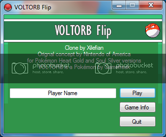
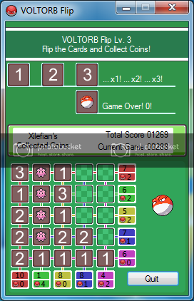

VOLTORB Flip is kind of a cross between Minesweeper, Picross and Suduko.
The story:
When the new Pokemon Heart Gold and Soul Silver games were translated for the international releases, censorship reasons caused the gambling-section of the game to be removed and replaced with a win-win game called “Voltorb Flip”.
I liked this game so much that I made a PC clone, called “VOLTORB Flip”.
I’ve added the ability to lose (Hit level 1 again and you lose half of your score, lose 1 level with each defeat) and removed the mostly un-used memo notes (With the numbers).
Download VOLTORB Flip B2 from MediaFire
Changelog:
B2 - Rebalanced difficulty curve
Description taken from Bulbapedia:
Screenshots:
 
Need to add stuff!
- Score board - To keep records of scores (Possibly online also?)
- Sound effects - With a mute button. If anyone has cool sound effects then please tell!
- Game Info - Still needs completing.
A probably not-going-to-be-used feature:
Because I was lazy, I kept the cards outside of the executional, this means that people can customise the cards and add in their own personal “deck” and designs. Neat-o!
Controls:
Left-click reveals a tile
Right-click toggles flag (On/Off)